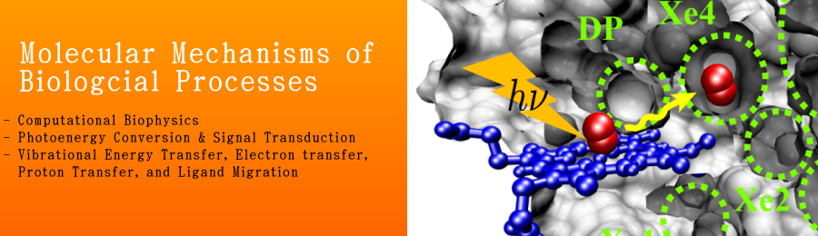

Welcome to Yamato lab’s homepage!¶
Contents:
Graduate School of Science, Nagoya University
{kind=link}
What’s new (last update: Nov 29, 2017)
- Nov 28, 2017.
Yamato will be visiting the University of Strasbourg (Unistra) for a couple of weeks in the frame of the common agreement Unistra-Nagoya University, during the academic year 2017(September)/2018(June).
- Nov 14, 2017.
Our paper “Characterization of mechanical unfolding intermediates of membrane proteins by coarse grained molecular dynamics simulation” by T. Yamada, S. Mitaku, and T. Yamato was accepted for publication in Chemical Physics Letters.
- Oct 25, 2017.
Yamato delivered a lecture entitled “If Isacc Newton Were to Study Biology, …” at Toyota Kita High School.
- Oct 24, 2017.
WELCOME! Ms. Ishii and Mr. Handa (Frontier Tech. Res. Lab. Kissei Pharmaceutical Co., Ltd.) visited us.
- Oct 04, 2016.
Our reserach grant proposal “Development of Virtual Reality Atomic Force Microscope (VR-AFM) by Using Haptic Device” was accepted by the Japan Reserach Institute of Industrial Science (Fukuyama)”.